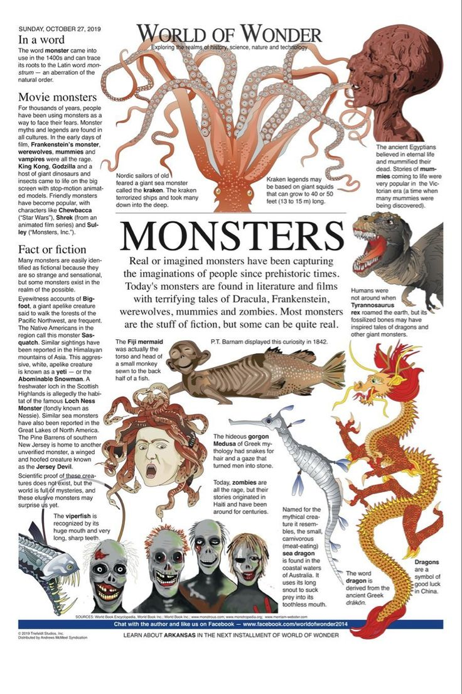

Новини
Новина 1
Альберт Енштейннн був одним з найвідоміших фізиків XX століття.
Його теорія відносності змінила наше розуміння простору та часу.
Енштейн також вніс великий вклад у квантової механіки та статистичної фізики.
Його робота продовжує впливати на сучасну науку, і його ім’я стало синонімом геніальності.

Новина 2
Ідея, що людство може не бути єдиними розумними істотами у всесвіті, завжди хвилювала науковців.
Останні дослідження, включаючи пошук екзопланет, підтверджують можливість існування життя на інших планетах.
Відкриття мікробів на Марсі чи інших планетах може стати доказом того, що Всесвіт переповнений життям.
Це ставить перед нами питання: якщо ми не одні, то чому ще не виявили інших цивілізацій?
Новинаааа 3
Коти — одні з найпопулярніших домашніх тварин у світі, відомі своєю незалежністю та граційністю.
Вони здатні навчатися, спілкуватися з людьми та навіть допомагати у боротьбі зі стресом.
Коти часто асоціюються з таємничістююю завдяки своїй поведінці та звичкам, які можуть бути важко передбачуваними.
Незважаючи на свою незалежність, вони здатні встановлювати сильну емоційну прив’язаність до своїх власників.
Новина 4
Монстри завжди були важливою частиною фольклору та культурних міфів по всьому світу.
Вони часто виступають символами страхів і невідомості, що лякають людей або виступають у ролі антагоністів у казках і легендах.
У сучасній культурі монстри перетворилися на персонажів фільмів, книг і відеоігор.
Попри своє страшне вигляд, деякі монстри стали об’єктами співчуття або навіть любові, як, наприклад, в історіях про добрих чудовиськ.
